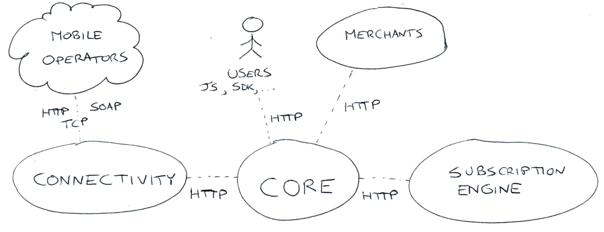
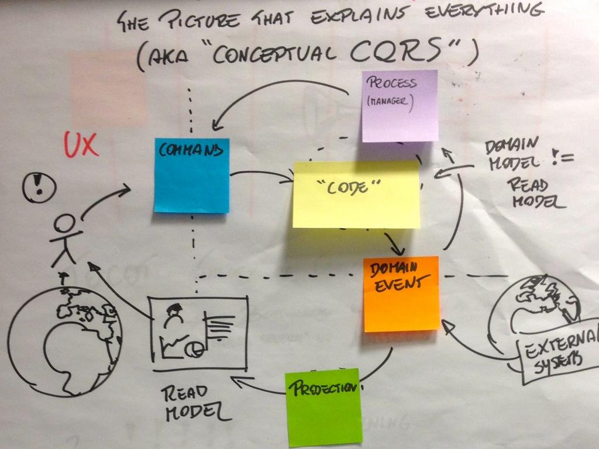
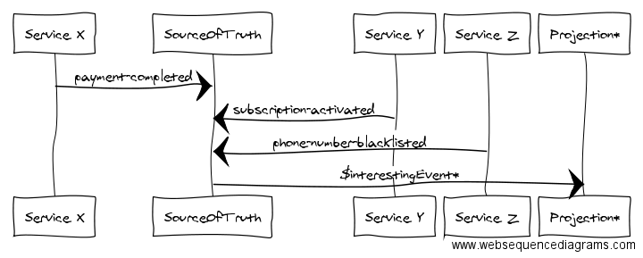

CQRS and Domain Events for integration
Giorgio Sironi
- I'm a developer (writes code, design stuff)
- Interested in
- Automated testing and TDD
- Object-oriented programming
- Distributed systems
If you are looking at these slides on your pc, press S to see the notes
Context


Implications
- many different logical and physical databases
- continuous need for integration e.g. for reporting needs
- no single services fits the bill
Bloody solutions (1/2)
Mega SQL query
- on which database, since they are all small?
- how to avoid thrashing the database machines?
When the ETL job to pull payments into the data warehouse starts, we go down for 10 minutes
Bloody solutions (2/2)
Joining CSV files
- they become very large with historical data
- inefficient even on a single day as data could be filtered
- process of joining and filtering them becomes fragile as a consequence
Every morning at 7am I run a few MongoDB `touch` commands to warm up the database in RAM before the circus starts

The source-of-truth service: Demetra

It works! Why?
- there is all the data there, forever
- decoupling over delivery and calculation of Domain Events
- consolidation of data processing infrastructure in a single codebase
How: schema
{
"id": "20ec0521-d127-4038-92ed-a4196c33705b",
"meta": {
"service": "core",
"type": "payment-completed",
"created_at": "2016-01-01T12:00:00.000Z",
"received_at": "2016-01-01T12:00:00.200Z",
"aggregate_id": "payment/23"
"correlation_id": "container/subscription/42",
},
"payload": {
"amount": "3.0000/EUR",
...
}
}
How: technologies
How: projections
{
"meta.type": { "$in" : interesting_types },
"received_at": { "$gt": last_checkpoint, "$lt": stable_timestamp }
}
How: processes
* * * * * www-data /var/www/demetra/bin/demetra projection:my-report
* * * * * www-data sleep 10 && /var/www/demetra/bin/demetra projection:my-report
* * * * * www-data sleep 20 && /var/www/demetra/bin/demetra projection:my-report
...
Issues: delivery
Request::to('https://source-of-truth.com/events', 'POST')
->withTheUsualAuthentication(...)
->asOptimisticJob()
->ensureIs(200, 409)
->retryPolicyIs(ExponentialBackoff::upTo('P1Y'))
->send()
Issues: out-of-order
- purchase-landed, created 14:00:00, received 14:02:08 after N retries
- purchase-completed, created 14:01:50, received 14:01:51
Issues: events are forever
Issues: importing
Issues: archival

Conclusions
- Domain Events are non-intrusive
- A Source Of Truth very often comes up
- Be prepared


{kind=link}